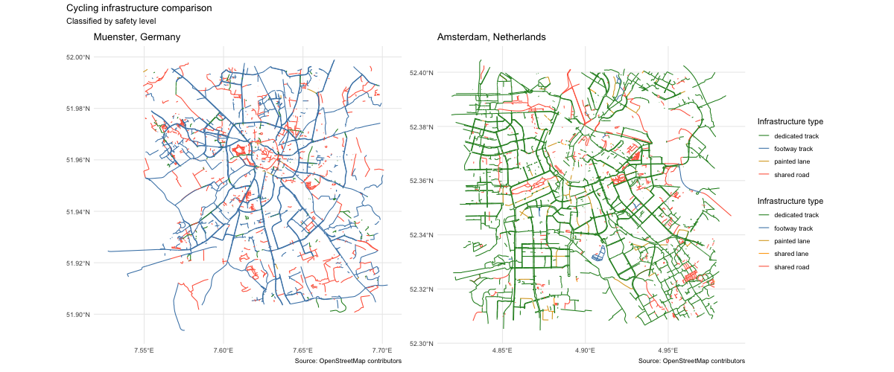
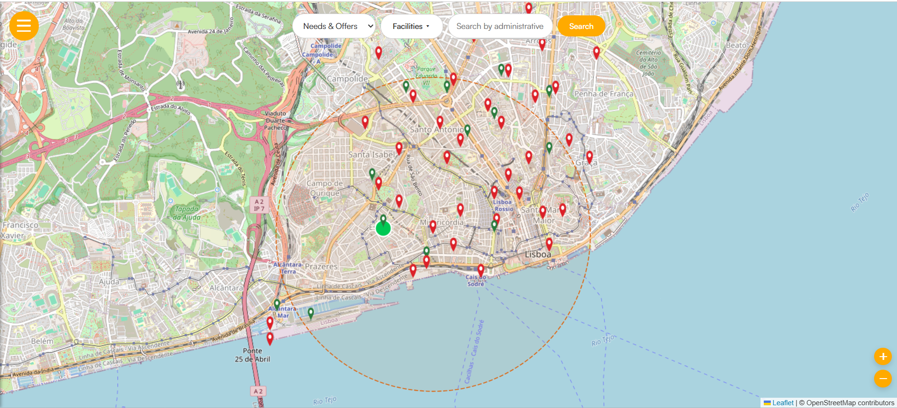

Two projects that work with OpenStreetMap data: one compares how cities build for cyclists, the other connects people in need with nearby offers of help.
A comparison of cycling infrastructure in Münster, Germany and Amsterdam, Netherlands, with every route classified by safety level using OpenStreetMap data.
compare_cities() draws the maps for both cities with exactly the same color palette. That makes it easy to compare the type of infrastructure each city uses at a glance, without checking the summary tables 🚲

An interactive web map where people post needs and offers during a hazard event, with filters for facilities and a search by administrative area. Here it is shown over Lisbon.
Click a need on the map and a dashed 2 km radius circle appears, highlighting the matching offers by proximity. Bright green circles are within range, and the closest offer is shown largest.
